（取自皇家科学协会文集（格丁根），13卷）[2]
以下关于三角函数的文章由两个实质上不同的部分组成．第一部分包含了关于任意函数（包括图形显示的）和将他们表示为三角函数可能性的看法以及历史．在写作时，我能够用到这位著名数学家的一些提示，这要感谢他在这个课题上的第一个的深入的工作．在第二部分中，我给出了对于是否函数可通过三角级数表示的研究，其中包括了一些还远未解决的情形．有必要在正式论述前写一个短的开篇文字，论述一下定积分的概念以及它所适用的范围．
1
三角级数，或称做傅里叶级数，即形如
a1sinx+a2sin2x+a3sin3x+…
1/2b0+b1cosx+b2cos2x+b3cos3x+…
的级数，对那些涉及完全任意的函数的数学分支来说，起着重要的作用；的确如此，有理由断言在这个对于物理学如此重要的数学分支中，最重大的进展来自对于对这些级数性质的更加清晰的洞察，即便是引向考虑任意函数的最早的数学研究中就已经出现了对这种问题的讨论，即，是否这样一个完全任意的函数能够通过上面所说的那种类型的级数来表达．
这出现在上一个世纪中期研究弦振动的进程中，这是一个当时最著名的数学问题，它们对于我们当前的课题的观点，如果不是讨论这个问题，自然是不用提及的．
在一定的假设下，事实上是以某种近似方式成立的假设下，人们已经很好地了解了伸展在一个曲面上的振动弦的形式，其中x代表在它上面一个给定点到原点的距离，y则是这个点到时刻t时所处位置的距离，该形式由偏微分方程
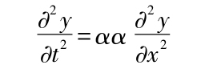
给出，其中α与t和x无关而不管整条弦是否有厚度．
达朗贝尔第一个给了这个方程一个通解．
他证明了[3]上面方程的x和t的解函数y必定包含在形式
f（x+αt）+φ（x-αt）
之中，它是在引进了独立变量x+αt和x-αt来代替x和t，从而
转换成
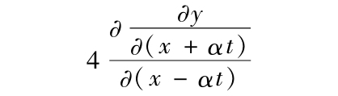
而得到的．
除去从一般运动法则得到的这个偏微分方程外，y还必须要满足在弦的接触点处总等于0．因此，如果在这些点有x=0，而在另外的点有x=l，我们便得到
f（αt）=-φ（-αt），f（l+αt）=-φ（l-αt），
从而
f（z）=-φ（-z）=-φ（l-（l+z））=f（2l+z），
y=f（αt+x）-f（αt-x）．
在达朗贝尔对此问题的通解给出结果后，又在一个该文的续篇[4]中处理了方程f（z）=f（2l+z）；即他寻求在z增长了2l保持不变时的解析表达式．
欧拉的实质性的成就（他在次年的Berliner Abhandlungen[5]中对达朗贝尔的这个工作做了新的表述）在于他更加正确地认识到函数，f（z）必须满足的条件的性质，他注意到，根据这个问题的性质，弦的运动在弦的形状和任意点的速度（从而y和
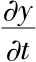
）给定的时刻是完全确定的，这表明，如果人们想到这些函数都被任意画出的曲线定义，那么达朗贝尔的曲线f（x）就可用简单的几何构造得到．事实上，如果假定t=0，y=g（x）和∂y/∂t=h（x），
于是，对于0和l之间的x的值便得到
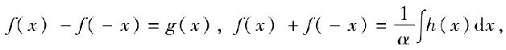
从而得到-l和l之间的函数f（z）．由此我们能够用下面的方程得到对于每个z的其他值：
f（z）=f（2l+z）
这个以抽象的然而如今已为普遍熟悉的关系所表述的是欧拉对于函数f（z）的定义，达朗贝尔立即对欧拉将他的方法推广提出反对意见[6]，因为他的方法必须假定y可以用t和x解析地表达．
还没有等到欧拉对此做出回答，与这两个十分不同的对此问题的第三个处理方法出现了，这是属于丹尼尔·伯努利的[7]．甚至早在达朗贝尔之前，泰勒[8]就已经看出
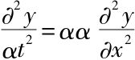
，对于x=0以及x=l，如果y=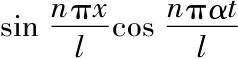
且n为整数时，y总等于0．由此他解释说，物理的事实是，除了它自己的主音阶外一根弦也会产生弦的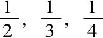
，…长的音阶（至少是一种方式），而且将他的特解看作是通解，即他相信，如果整数n按照音调的音高确定，则弦的振动总是，或者至少非常接近于这个方程，弦可以在同一时刻产生各种各样的音阶的这个事实现在便可让伯努利注意到（在理论上）弦可以按照方程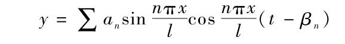
振动，并且因为所有观察到的对此现象的修正可以用这个方程去加以解释，他相信它是最一般的情形．[9]在这个观点支持下，他研究了一个伸展的无质量细线，在单个点上则载有有限的质量，证明了他的振动总可以分裂成许多振动（等于有限质点的数目），它们中的每一个振动在全体质量振动的时间中一直持续着．
伯努利的这个工作引出了欧拉的新文章，它直接发表在Abhandlungen der Berliner Akademie的文章之后．[10]在这里，他在回应达朗贝尔时认为[11]函数，f（z）在-l到l的范围内是完全任意的，并且注意到[12]伯努利的解（欧拉较早时已作为一个特例得出过这个解）要成为通解当且仅当级数
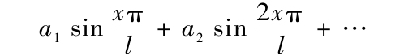
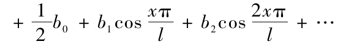
对于作为横坐标的x，可代表在0与l之间完全任意一条曲线的坐标，当时没有人怀疑可施行的所有关于分析表达的变换，不管是有限还是无限的，对于未知量的任何值都是成立的，否则，如果它们不成立，那么它们便不可能只被用到十分特殊的情形．因此似乎不可能使用上述表达式来表示任意代数曲线，或者更一般地，一个解析表达的非周期函数；从而欧拉相信他需要去决定与伯努利相反的问题．
然而欧拉与达朗贝尔的争辩并未得到解决．这使得一位年轻的，那时还是鲜为人知的数学家拉格朗日试图以一种全新的方式去解决这个问题，依此方法他达到了欧拉的结果．他采取的办法是[13]给定一条无质量的线，并在不确定个数的等间隔的点载以相等的质量，然后研究当这些质点数增至无穷时这些振动是如何变化的．做这项研究的第一部分，不管他用的技巧有多丰富，不管他用的分析艺术有多高超，从有限到无限的过渡还是留下了许多需要进一步解决的地方，这使得达朗贝尔在他的Opuscules mathématiques（《数学文选》）中一开头就能够宣称他的解将得到广大公众的承认，于是，那时的著名数学家们的观点在此问题上分成了派别，并继续分道扬镳；甚至在他们以后的工作中，每一方基本上都坚持着他们的立场．
最后，综合起来看，这个问题让他们有了关注任意函数是否可以被三角级数表示的情形，而欧拉则是第一个将这些函数引进微积分的人，并使它们有一个几何背景的支撑；他将微分学用于它们．拉格朗日[14]认为欧拉的结果（他的对振动过程的几何构造）是正确的；但是欧拉对这些函数的几何处理并没有使他满足，相反地，达朗贝尔[15]采用了欧拉的微分方程却只限于支持他的结果的正确部分，这是由于对于完全任意的函数不可能知道它们的微商是否连续．至于伯努利的结果，他们三个全都认为它不能被看成是通解；达朗贝尔却趁此宣称伯努利的解没有他自己的广，并不得不承认一个解析表示的周期函数甚至也不总能表示为三角级数，拉格朗日[16]则相信他能够证明这是可能的．
2
几乎五十年过去了，任意函数是否可以被分析地表达的问题未能取得任何重大进展，然后，傅里叶的一篇评注给予这个课题以新的希望．这个数学分支发展的新纪元开始了，很快，特别在纯数学之外，它就以对数学物理的极其巨大的推升宣示了自己的存在．傅里叶注意到在三角级数
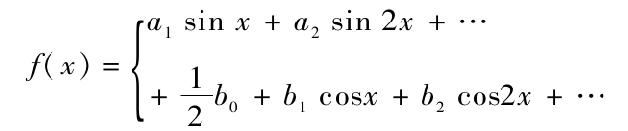
中，这些系数可以以下面的公式
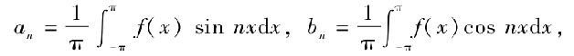
定义
他看出这种定义它们的方法可以对于即便函数f（x）为完全任意时也可继续使用．对于f（x）他给出了一个所谓的不连续函数（对于横坐标x的一条间断直线的坐标）作为例证，得到了一个级数，而它实际上连续地给出了这个函数的值．
在他把关于热力学的之一著作中第一部分提交给法国科学院时（1807年12月）[17]，他第一次建立了一个定理，表明一个能画成图形的任意函数可以通过三角级数表示，这个断言让有点年纪的拉格朗日如此惊讶，以致他几乎决定要反对他．据推测[18]，一份关于这件事的书面文字仍可在巴黎科学院的档案中找到，尽管泊松（Poisson）关于用三角函数来表示任意函数的做法他都说参考了[19]拉格朗日关于弦振动著作中的一段，并说在那里这个表示法是可以找到的．这个说法如果是假的也只能通过傅里叶和泊松之间的对立状态去解释了[20]；要推翻这个说法，我们必须再次回到拉格朗日的文章，这是因为科学院没有出版过这方面的记录．
事实上，在泊松所引述的段落[21]中，我们找到了公式：
“y=2∫YsinxπdX×sinXπ+2∫Ysin2XπdX×sin2xπ+2∫Y sin3XπdX×sin 3xπ+etc．+2∫Y sin nXπdX×sinnxπ，
故而，当x=X时我们将得到y=Y，Y是对应于横坐标X的坐标．”
的确如此，这个公式看起来十分像傅里叶级数，以致乍看起来容易混淆。但是这个外表仅仅是来自拉格朗日使用的记号∫dX，按现在的习惯在这里他会用记号∑ΔX．它提供了这个问题的解，即，如何以一种方法去确定一个正弦函数的有限级数
a1sin xπ+a2 sin2xπ+…+ansin nxπ，
使得对应于x的值
它应该给出事先给定的值，拉格朗日把这些给定的值以不定的方式记为X．如果拉格朗日在此公式中曾让n变到无限大的话，他或许真的已经得到了傅里叶的结果．但是如果人们通读了他的这篇文章，就会看出他并不真正相信一个任意函数可以用正弦函数的无穷级数来表示．更确切地说，由于他不相信这些任意函数能够通过一个公式表示，而相信三角函数的级数可以表示任何解析表达的周期函数，他已在进行着一项完整的计划．当然，现在我们看来几乎不会怀疑拉格朗日会从他的求和公式达到傅里叶级数．但是其结果或许可以解释为，通过欧拉-达朗贝尔争辩，他已形成一个对于走哪条路的的确定趋向．他认为在将他的想法用到极限之前，他首先要完全解决对于不确定的有限个质点的振动问题．这些要求有一个相当广泛的研究[22]才行，但如果他熟悉傅里叶级数的话，这完全就是不必要的了，三角级数的性质的确为傅里叶所完全正确地认识到了[23]．自此之后，它们便被大量地用于数学物理之中来表示任意函数，并且在每一个个体情形，人们很容易相信傅里叶级数事实上收敛于这个函数的值．但是给这个重要的定理一个一般的证明还需等待很长的时间．
柯西在1826年2月27日向巴黎科学院宣读的文章被证明[24]是不合适的，就如狄利克雷所指出的那样[25]，柯西假设了如果在一个任意给定的周期函数f（x）中，对x应用了一个复的变量x+iy，而这个函数对于每个y值是有限的．但是这只会当此函数等于常量时才会发生．然而容易看出这个假定对于要得到更为大范围的结论而言是不必要的．它只要有一个函数φ（x+iy）对于所有y的正值为有限而它的实部对于y=0等于所给定的周期函数f（x）就可以了．由假定，这个实际上是正确的定理[26]真能够沿着柯西所设计的路线把我们带到我们希望去的地方（反过来说，就是这个定理可以由傅里叶级数推导出来）．
3
一直到1829年，狄利克雷关于不具有无穷个极大和极小值的函数的完全可积性的文章才在克雷尔期刊（Crelle′s Journal）[27]中出现，他对于任意函数是否可以有三角函数表示的问题给出了完全严格的回答．
他洞察到无穷级数可以根据它们能否当将它们所有项变为正数时仍能保持收敛划分为两个本质上不同的范畴，从而认识到应选择哪条路线来解决这个问题．对于前者，这些项可以随意地安排，而后者的值则依赖于项的次序．事实上，如果在第二类的一个级数中我们按次序列出该级数的项
a1，a2，a3，…
以及负数项
-b1，-b2，-b3，…，
显然，∑a同样还有∑b必为无穷，这是因为如果都为有限，那么这个级数的项都改为相等的符号时也收敛了；而如果其中一个无穷，这个级数就会发散．显然，在适当安排项时这个级数包含任意给定的数C，这是因为如果人们交错地将这级数的正项相加到大于C的程度然后再将负的项加到使其值变成小于C，但与C的偏离不会大于上一次偏离符号改变时的值．又因为a和b的值在指标增大时最终都将变为无穷小，故而当我们在级数的足够远处时，这个和与C的偏离便可以任意小，就是说，级数将收敛于C．只有对第一类的级数才可应用有限和的规则；只有它们才能真正看成是它们的项的整体形象，而第二类级数则不能；这是一个为上一世纪数学家所忽视的情况，无疑主要是由提升一个变量的幂形成的级数总体来说（即除去这个变量的个别值）属于第一类的原因．
显然，傅里叶级数不必属于第一类；他的收敛性确实不能像柯西的没有成果的尝试[28]那样，寻求从使项递降的规则中导出它的收敛性．需要证明的，更正确的是，有限级数
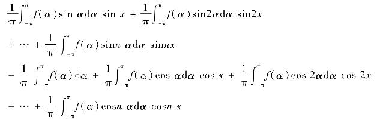
或者等价地，积分
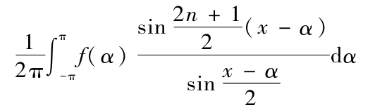
当n增大到无穷时趋向于值f（x）．狄利克雷以两个定理支持了这个证明：
（1）如果
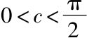
，最终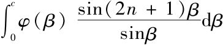
当n增大时无限接近于值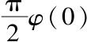
；（2）如果0<b<c<
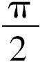
最终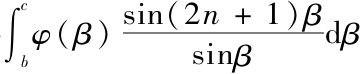
当n增大时无限趋向于0，其中假定了函数φ（β）在此积分范围内或者总是下降或者总是增大．借助于这两个定理知道，如果函数f不会无限次地从增大转到减小也不会从减小转到增大，则函数
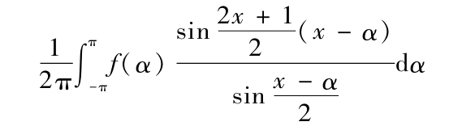
显然可以被分裂成有限多个项，其中一个[29]趋向于
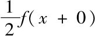
，而另一个趋向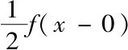
，而其余的，当x增大到无穷时，趋向于0．由此得到，三角级数可以表示每一个按2π间隔周期重复的函数，它1.是完全可积的，
2.不具有无穷多个极小和极大值，并且
3.在它间断的地方取其两边极限的平均值．
一个具有前两个而不具有第三个性质的函数显然不能够用一个三角级数表示，一个表示它的三角级数除了不连续性外在它的不连续点自身发散．但是即便如此，这个研究仍然留下了在什么情形下一个不满足前两个条件的函数可以由三角级数表示的问题没有解决．
狄利克雷的工作对于整整一大堆重要的分析研究提供了坚实的基础．这是由于他完全澄清了欧拉出错的地方，并且成功地解决了许多卓越数学家从事了七十年（从1753年以来）的一个问题．事实上，它对于在自然界的我们所关切的所有情形给予了完全解决；但是我们对于物质力中的时空变化以及在无穷小中的状态极其无知，即便如此，我们还是能够保证狄利克雷的研究所不能延伸的地方那些函数在自然界并不存在．
虽然如此，有两个理由说明似乎还值得注意一下狄利克雷没有解决的情形，第一，如狄利克雷自己在他的文章最后面注意到的，这个课题与无穷小计算（微分学）有着极其紧密的联系，因而可以将这些原理弄得更加清晰和更加具有确定性．就这方面而言，它对于处理这个课题有着直接的好处．第二，傅里叶级数的可应用性不仅局限于物理学的研究．现在它已成功地应用于纯数学的领域：数论，而恰恰在这里，那些没有被狄利克雷研究到它们的三角函数表示的函数起着重要作用．
在他的文章结尾，狄利克雷的确许诺以后将回来讨论这些情形，但是这个许诺还远未完成，迪尔克森（Dirksen）和贝塞尔（Bessel）关于余弦和正弦级数方面的工作也没能填补上这个缺口．再说，他们比起狄利克雷在严谨性和一般性上要差了很多．迪尔克森的文章[30]几乎与后者属于同时代的，显然在写的时候并不知道后者；文章所进行的路线总的来说是正确的，但在细节上却包含了许多不确之处．抛开它在一个特殊情形对级数的和的一个错误结果[31]不谈，在一个旁注中它还依赖了一个只在特殊情形才可能成立的一个级数展式[32]，故而他的证明仅对具有有限的一阶微商的函数才是完全的．贝塞尔[33]寻求的是简化狄利克雷的证明．但是对此证明的变动并没有赐予其结论的任何根本性的变化，最多是给它披上了更为人们熟悉的概念的外衣罢了，因而显著地削弱了它的严谨性和一般性．
因此，是否一个函数可以用一个三角级数表示的问题至此仅在两个假设的基础上做出了回答：函数为完全可积与它不具有无穷多个极小和极大．如果没有作后一个假定，狄利克雷的两个积分定理都不适合于回答这个问题．但是如果前者被丢弃一边，那么傅里叶系数的定义就不再能用．我们将会看到这确定了我们将要建立的路线，在那里我们将在对函数的性质不作任何特别假定下对此问题进行研究．就目前情形来看，狄利克雷所指出的路线是行不通的．
4
现在不确定性仍然影响着定积分理论的许多关键点，这使我们不得不对定积分的概念和它的有效范围做一点开场白式的注释．
那么，首先是：我们所理解的
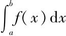
究竟是什么？要确定这一点，让我们假定有一系列在a与b之间按大小递增排列的值x1，x2，…，xn-1，并为简便起见我们用δ1代表x1-a，δ2代表x2-x1，…，δn代表b-xn-1，而ε代表一个正实分数．于是和
S=δ1 f（a+ε1δ1）+δ2 f（x2+ε2δ2）+δ3 f（x2+ε3δ3）+…+δn f（xn-1+εnδn）
依赖于间隔δ和数ε的选取．但现在不管δ和ε如何选取，如果当这些δ变为无穷小时，这个和具有性质：趋向于一个固定的极限A；我们称这个极限值为
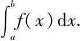
如果它不具有这个性质，则
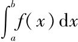
没有意义．然而即便是这样也曾有过多次的尝试，想要赋予这个符号一个意思，在这些对定积分概念的推广之中有一个是为所有数学家接受的，即，当变量趋向于区间（a，b）的一个特殊值c时如果函数f（x）变到无穷大，则不管我们使得这些δ如何小，显然和S可以得到任意值．因此它没有极限值，而
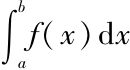
，按照上面所说，就没有意义．但是倘若α1和α2是无穷小时，如果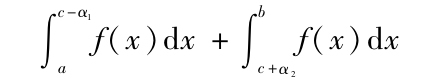
在该点趋向于一个固定的极限，则可理解为这个极限值．
被柯西看成是定积分概念的其他陈述，虽然在基本概念下并不存在却对个例的研究有用．但是，它们并不具普遍性而且有相当的随意性，因此的确不甚适合引进．
5
其次，我们现在来观察一下这个概念的有效范围，或者说考虑以下问题：在什么情形下一个函数可积，什么情形下不可积？
我们首先看一下积分的狭义概念，即我们假定当这些δ变到无穷小时和S收敛，故而如果函数在a与x1间的最大变差，即它在此区间的最大值与最小值之间的差为D1，以及在x1与x2之间的最大变差为D2，…，还有xn-1与b之间的为Dn，于是
δ1D1+δ2D2+…+δnDn
必须随δ一起变为无穷小．进一步我们假设，只要所有的δ保持小于d，这个和能够达到的最大值为Δ.Δ在这样的观点下是d的一个函数，它随d递降，并与其一起变为无穷小．如果此时在其上变差大于σ的这些区间的总长=s，那么这些区间对于和δ1D1+δ2D2+…+δnDn的贡献显然≥σs．因此我们得到
σs≤δ1D1+δ2D2+…+δnDn≤Δ，
因此
现在如果给定σ，
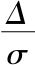
在适当选取d时总可以成为无穷小；从而s也是如此，那么它便推出了如下断言：为使和S在所有δ成为无穷小时收敛，不仅函数f（x）必须为有限，而且使变差>σ（σ为任意）的那些区间的总长必须在适当选取d时可以成为任意小．
这个定理也可转换为以下形式：
如果函数f（x）总为有限，且对于函数f（x）在其上的变差大于一个给定数σ的这些区间的总长度，在σ的所有值无限递降时最终连续地变为无穷小，则当所有的δ变为无穷小时，和S收敛．
对于那些在其上变差>σ的区间贡献给和δ1D1+δ2D2+…+δnDn的总量小于s乘以该函数在a与b之间的最大变化值，（按假定）为有限．其他的区间贡献的总量<σ（b-a）．显然可以首先假定有一个任意小的σ，然后（按假定）确定这些区间的长，使得s也变成任意小，因而和δ1D1+δ2D2+…+δnDn可按想要的任意小给出，因此和S便可以被包含在一个任意狭窄的范围之中．
因此我们已经找到当δ的值无限递降时和数S收敛于一个有限值的充分必要条件，并且在此情形我们可以以一种狭义的方式谈及函数f（x）在a和b之间的积分（2）．
如果现在的积分的概念像上面那样进行了拓展，我们发现这两个条件的后一个在为了可能进行完全积分的情形中仍旧必要．但是代替函数总为有限条件的是，函数仅在变量趋向特定值时变为无穷，从而如果积分极限无限靠近这个值，一个确定的极限值便出现了．
6
我们已经研究了可以在一般情形下存在定积分的条件，即在对于函数的性质在没有特殊假设下的可积条件，在这之后，现在这个研究一方面应该得到应用，而另一方面则应该被细化到特殊的情形，就是说首先是那些函数，它们在任意两个十分靠近的界限之间有着无穷多个不连续点．
由于这些函数还没有被人们考察过，先在一个特殊的例子的基础上进行处理是有好处的．为简短计，我们用（x）表示对最靠近x的整数的余值，如果x处在两个整数的正中，这个定义不甚明确，就让（x）表示对它的余值
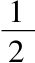
和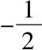
的平均值，即0．另外我们用n表示整数，p表奇数，这样，我们构造一个级数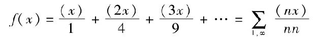
容易看出，这个级数对于x的每个值都收敛．如果由变量给出的值逐渐变到z（持续下降和上升），则这个级数会连续地趋向于一个固定的极限，事实上，如果
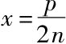
（其中p和n互素），则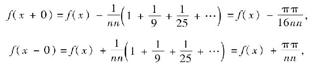
其余处处有f（x+0）=f（x），f（x-0）=f（x）．
这个函数因而对于每个为化成既约形式的有理数x是一个具偶数分母的分式．因此无论这两个极限如何靠近，这个函数总具有无限多个不连续点，但却是这样一种方式，即使得大于一个给定值的跳跃的个数是有限的．它是完全可积的．除了它的有限性外，事实上还有两个性质对于这个目的而言是充分的：对于x的每个值它在任一边都有极限f（x+）和f（x-），以及大于或等于一个给定数σ的跳跃点的个数总有限．如果我们应用上面的研究，这两个情形的显然推论便是，σ总可假定为足够小，使得那些不包含这些跳跃的所有区间中，变差小于σ，而包含这些跳跃的区间的总长可以任意小．
值得注意那些不具有无穷多个极大和极小值的函数（刚才所考察的函数不属此例），它们在这些地方没有变为无穷，故总具有这两个性质，因而只要它们不是无穷就是可积的；这可直接证明（3）．
现在让我们对在一个特定值成为无穷大而可积的函数f（x）的情形作更仔细的考察；设这出现在x=0，故而对于一个递减的正x，它的值最终会增大到超过任何设定的界限．
容易证明，当x从一个有限的界开始减小时，xf（x）不能永远保持大于一个有限值c．因为这表明会有
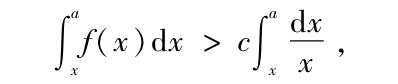
因而会大于
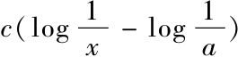
，当x递降时它的值会最终增大到无穷，因此，如果这个函数在x附近没有无穷多个极大和极小值，xf（x）必定与x一起成为无穷小，以使得f（x）可积，另一方面，如果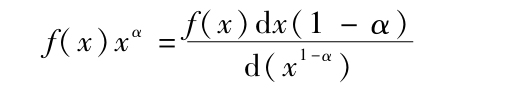
在α<1时随着x一起成为无穷小，可清楚看出这个积分当下限变为无穷小时收敛．
同样地可以知道，在积分收敛的场合，当x从一个有限的界开始递降时，函数
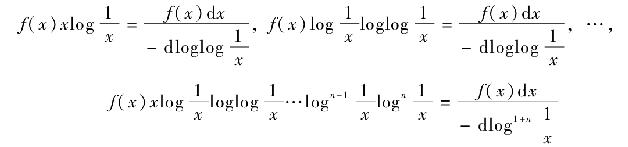
不会永远保持大于一个有限值，因而如果它们没有无穷多个极大和极小值，必定随x一起成为无穷小．另一方面我们发现当下限为无穷小时，一旦
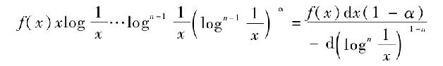
对于α>1，随x一起成为无穷小，则积分∫f（x）dx收敛．
但是，如果f（x）具有无穷多个极大和极小值，则不能确定它变为无穷的阶，事实上，如果我们假定函数由其绝对值给出，并且它变到无穷时的阶仅依赖于此，则适当地定义符号总可使积分∫f（x）dx在下限为无穷小时收敛．函数
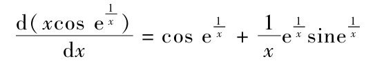
是那样一个例子：一个以无穷大的阶变到无穷大的函数（将
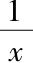
的阶作为1）．让这个话题就谈到这里吧，它基本上属于另一个领域．我们现在转到我们的真正的任务，即是否一个函数可以用一个三角函数表示的一般性研究．
7
迄今在这方面的研究的目标是对天然存在的情形证明傅里叶级数的存在性．因此可开始于对完全任意函数进行这种证明，并在此后，对这个函数的研究可使其受制于任意限制以有助于证明，只要这样做不会有损于这个目标就行．就我们的目的而言，我们只能将证明限于使一个函数成为可表示的必要条件中．因此必须首先找出对于可表示性的必要的条件，然后必须从中挑出对于可表示的充分条件．然而早先的工作表明：如果一个函数具有这样和那样一些性质，它便可以由傅里叶级数表示；于是，我们必须从反向提出问题：如果一个函数是用三角级数表示的，那么，对于如何使该函数能运作，并且对于当变量连续变化时它的值如何改变方面我们能够推出什么结果？
让我们来看一看级数
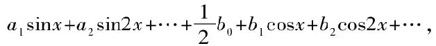
或者为简便计令
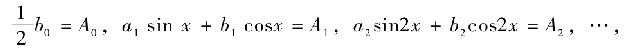
于是我们可将该级数用
A0+A1+A2+…
给出．记此表达式为Ω，并记其值为f（x），故而此函数只代表这个级数在x为收敛的那些值．
为了使一个级数收敛，它的项必须最终变成无穷小．如果系数an和bn当n向无穷增大时减小，则级数Ω的项对于每个x的值最终变成无穷小；但这种情形或者只出现在x的特殊的值上．需要分别对待这两种情形．
8
因此，首先我们假定级数Ω的项对于每个x的值最终变成无穷小．
在此假设下，由Ω经过对每一项按x积分两次得到的级数
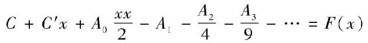
对于每个x都收敛．值f（x）随x连续地变化，从而x的这个函数F处处可积．
为了了解如下两个性质，即这个级数的收敛性，以及函数f（x）的连续性，让我们用N来表示该级数一直到项
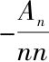
的和，R表示级数其余的项，即级数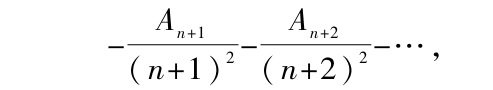
并且以ε表示对于m>n的所有Am中的最大值，这时，不管此级数被延续到多远R的值显然一直可因表达式
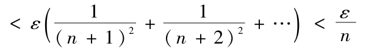
而舍去，因而只要假定n充分大，它就可以包含在任意小的范围之内；于是级数收敛．
另外，函数f（x）连续，即对于任意给定的小的范围，如果对于x的相应变化可指定一个充分小的范围，使此函数值在所给定的小范围内变化．f（x）的变化由R的变化和N变化组成；现在显然可以一开始就假定n足够大，不管x如何，对于x的每个变化．R因而R的变化都可任意小，然后假定x的变化足够小使得N的变化也任意小．
陈述几个关于这个函数f（x）的定理，并将对它们的证明插入我们的研讨过程中应该是个不错的主意．
定理1．如果级数Ω收敛，则当α和β变成无穷小且保持它们的比为有限时，则
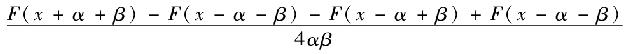
收敛于级数的同一值．
事实上，
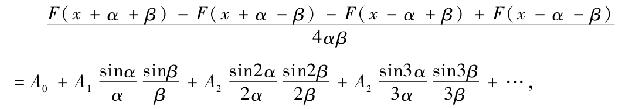
或者，首先解决β=α的较为简单的情形，
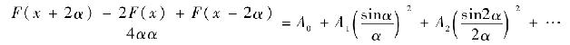
如果无穷级数
A0+A1+A2+…=f（x）
是序列 A0+A1+…An-1=f（x）+εn
则，对于给定σ的任何值，必定可以指定n的一个值m，使得如果n>m，有εn<δ．如果我们现在假定α如此之小使得mα<π，并且如果进一步假定
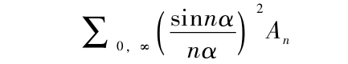
在替换An=εn+1-εn下的形式为
再将最后的这个级数分成三个部分之和，即
1．级数的从1到m的项，
2．级数的从m+1到小于的最大整数的项，设为s，
3．级数的从s+1到无穷的项．
第一部分于是由有限个连续变化的项组成，从而如果让a变成无穷小则它可以任意地靠近它的极限值0．
第二部分，由于εn的因子始终都是正的，故它显然因表达式
而舍去．
最后，为了让第三部分包含在范围以内，应该分解通项为
它于是显然
从而从n=s+1到n=∞的和
当α变小，级数
因而趋向一个极限值，而这个值不会大于
因此必为零，从而当a变成无穷小时，
随同f（x）一起收敛，于是我们的定理在β=α的情形得证．
为证明一般情形，设
F（x+α+β）-2F（x）+F（x-α-β）=（α+β）2（f（x）+δ1），
F（x+α-β）-2F（x）+F（x-α+β）=（α-β）2（f（x）+δ2），
由此，
F（x+α+β）-F（x+α-β）-F（x-α-β）+F（x-α-β）
=4αβf（x）+（α+β）2δ1-（α-β）2δ2，
由我们刚才证明的结果知，δ1和δ2当α和β变成无穷小时则也变成了无穷小；如果δ1和δ2的系数不同是变为无穷大，则
也变成了无穷小，而这种同时变为无穷大的情形在同时保持有限的情形是不会出现的，因此
随同f（x）一起收敛．Q.E.D．
定理2．
与α一起变成无穷小．
为证此，我们将级数
分成三组，其中的第一个包含直到一个具固定指标m的项，使得在其后面的An总小于ε；第二组包含了所有那些接续的项使得它们的nα≤一个固定的值c，而第三组则由级数的其他项组成．于是容易看出，如果α变成无穷小，第一组的和仍旧有限即小于一个固定的值Q；第二组的和，而第三个和
因此仍有的小于，由此得到了定理的证明．
定理3．如果我们以b和c表示两个常数，其中c较大，而λ（x）表示一个函数，它及其一阶微商都在b与c间连续，并在这两个边界等于零，而其二阶微商没有无穷多个极大和极小值，于是积分
当μ增大到无穷时，最终成为小于任意给定的值．
如果将F（x）换成它的级数展开式，则对于
可得到级数Φ：
现由于An cos μ（x-a）显然可以表达为cos（μ+n）（x-a），sin（μ+n）（x+a），cos（μ-n）（x-a），sin（μ-n）（x-a）的总和，并且如果在其中用Bμ+n表示前两项的和，Bμ-n表示后两项之和，于是我们得到cosμ（x-a）An=Bμ+n+Bμ-n，
而且，不管x如何，Bμ+n和Bμ-n当n递增时最终变成无穷小．
对于级数（Φ）的通项表达式
因而
或者，在分部积分两次后，第一次将λ（x），第二次将λ′（x）看作常量，
由于λ（x）和λ′（x）为常量，从而在积分号内级数的项在边界为零．
容易看出，当μ增至无穷，对于任意的n，变成无穷小；由于该表达式等于积分
的总和，并且如果μ±n变到无穷大，则这些积分亦然，但如果不是如此，因为n成为了无穷大，则在此表达式中它们的系数便变为了无穷小，
因此对于所有满足条件n<-c′，c″<n<μ-cμ+cIV<n（对于不管什么的变量c的任意值）的整数展开的和
如果能证明当μ变为无穷大时此和保持有限，这显然就足以证明我们的定理了．除去满足-c′<n<c″和μ-c<n<μ-cIV的那些项，它们显然无穷小且项数有限外，级数（Φ）显然保持小于乘以成为无穷小的的该和数的最大值．
但现在，如果c的值>1，和数
在上述范围内小于
并且是它在
S中的展开式，因为如果我们将整个由-∞到∞的区间，从0开始分割成长为的区间，并且如果我们处处将积分号内的函数以它们在这些区间中的最小值替代，并由于该函数在积分区间中并非处处有极大值，故我们得到该级数的所有的项，如果进行积分，我们便得到了
从而是一个在以上范围内的值，它不随μ（4）一起变为无穷小．
9
借助于这些定理，在下面可以确定通过三角级数来表示一个函数的能力，其中这个级数的项对于每个变量值都最终变成无穷小．
Ⅰ.对于一个可通过其项对于x的每个值最终成为无穷小的三角级数表示的周期为2π的函数f（x），则必存在连续函数F（x），使f（x）以如下方式依赖于它，即使
在α与β保持无穷小的同时它们之间的比保持有限时，它随同f（x）一起收敛．
另外，对于积分
如果在积分区间端点λ（x）和λ′（x）=0，并且λ（x）和λ′（x）在它们之间连续，而如果λ″（x）不具有无穷多个极大和极小值，则当μ递增时该积分最终变成无穷小．
Ⅱ．反之，如果这两个条件都满足，则有一个三角级数，其系数最终变成无穷小，并在收敛的点代表了这个函数．
因为，如果我们定义C′和A0为使
是一个周期地重复在一个2π区间的函数，而且如果将后者按照傅里叶的方法展开为三角级数
其中有如下的等式：
于是
当n递增时最终必定（按假定）变成无穷小，按前面的定理1其结论是，级数
A0+A1+A2+…
与f（x）一起收敛于同一值（5）．
Ⅲ．设b<x<c，而ρ（t）是个使得ρ（t）和ρ′（t）在t=b和t=c取值0的函数，并且在这两个之间连续地变化，另外，还设ρ″（t）没有无穷多个极大和极小值，并且对于t=x，设ρ（t）=1，p′（t）=0以及p″（t）=0，但，最后，设p（t）和pIV（t）为有限且连续；因此在序列
A0+A1+…+An
与积分
之差当n递增时最终变成无穷小，级数
A0+A1+A2+…
或收敛或不收敛，于是取决于当n递增时，
是否最终趋向还是没有趋向一个固定的极限．
事实上，
或者，由于
于是它
但现在由前面的定理3，
如果λ（t）连同它的一阶微商均连续，λ″（t）没有无穷多个极大和极小值，且对于t-x，λ（t）=0，λ″（t）=0，但λ和λⅣ为有限且连续（6），则当n无线递增时它变成无穷小．
如果在此令λ（t）在端点b，c外等于1，而在其间=1-ρ（t），这显然可以做到；由此得到，序列A1+A2+…+An和积分
之差当n递增时最终变成无穷小．但是由分部积分容易知道，
当n趋于无穷大则收敛于A0，由此我们便得到上述定理．
10
因此，研讨得到的结果是这样的：如果级数Ω最终成为无穷小则该级数对于x的一个确定值的收敛性仅依赖于f（x）在这个值的非常靠近处的行为．
是否该级数的系数最终成为无穷小在许多情形不一定由它们的定积分展开式而是由其他的方式决定，即便如此，还是值得特别提出一个情形，在此它可以直接由函数的特性决定，即是否函数f（x）一直保持有限并可积．
在这种情形，如果我们将此级数分别分解到从-π到π的整个区间分成的一小段一小段上，这些小段的长分别为
δ1，δ2，δ3，…，
并用D1表示该函数在第一段的最大变差，D2代表在第二段上的，等等，于是一旦所有δi变为无穷小，
δ1D1+δ2D2+δ3D3+…
必变为无穷小，
但是，如果将积分sin n（x-a）dx分解，(除去因子外，级数的系数均包含在此形式中)，或者，等于说，将sin n（x-a）dx从x=a起分成长为的区间，每一段上对于总的和所贡献的小于乘以在此区间上函数的最大变差，从而它的和小于一个值，按假定它必与一起变成无穷小．
事实上，这些积分具有形式
正弦函数在前半为正而在后半为负，如果用M代表f（x）在该积分区间中的最大值，而m表示最小值，显见，如果我们在前半段以M置换f（x），以m在后半段置换，然而如果在前半段以m置换f（x），后半以M转换f（x），则此积分便变小，但是在前半我们得到了值，而在后半得到，从而积分
小于
其中Ms表示f（x）在第s个区间上的最大值，而ms是最小值；但是，如果f（x）为可积，这个和数当n无穷大，即区间的长为无穷小时变为无穷小．
因此在我们上面的情形级数的系数变为无穷小．
11
现在我们仍需研讨如下情形，此时级数Ω的项最终不是对于变量x的所有值成为无穷小．这种情形可以化到前面的情形．
就是说，如果在此级数中对于变量值x+t和x-t添加进同等的项，便得到
2A0+2A1 cos t+2A2 cos 2t+…，
它的项最终对t的每个值变成无穷小，从而对它可应用前面的研究．
为此，如果我们用G（x）表示
故在那些使F（x+t）和F′（x+t）收敛之处有，结果如下：
Ⅰ．如果级数Ω的项对于变量x最终成为无穷小，则
当λ递增，且如果μ如第9节中的那个函数，它最终成力无穷小．
这个积分的值由下面的部分构成：
当然假定这些表达式要有一个值，是函数F在对称地处于x两侧的两个点上的形态使得它变为无穷小的．但必须注意到在此有点，使得每个部分在其上不变为无穷小；否则级数的每一项就会对每个变量的值最终成为无穷小．因此对称地处于x两侧的两点所做的贡献必定相互抵消，故对于一个无穷的μ它们的和变为了无穷小．
由此得出，级数Ω只对变量x的那些处于对称位置的点的值可以收敛，且在这些对称点
对于一个无穷的μ不为无穷小，因此仅当这些点的个数无限大时，一个具有不降到无穷的系数的三角级数对于变量的无穷多个值才能收敛．
反之，对于
如果
对于一个无穷的μ总变为无穷小，则它当n递增时变成了无穷小．
Ⅱ．如果对于x的某些值级数Ω的项最终变成无穷小，则此级数收敛与否取决于函数G（t）对于一个无穷小的t是如何运作的，事实上，在
A1+A2+…+An
与积分
之间的差当n递增时最终成为无穷小，其中b是个在0与π之间任意小的一个常数，ρ（t）与ρ′（t）为连续，并对t＝b时为零，ρ″（t）没有无穷多个极大和极小值，而且对于t=0ρ（t）=1，ρ′（t）=o和ρ″（t）=0，但ρ″（t）和ρIV（t）为有限和连续．
12
一个函数可以以一个三角级数表示的条件当然可以进一步做点紧缩，因而多少可以将我们的研究向前推进而无需对于函数的性质做特别的假定，举例来说，在我们得到的最后那个定理中，条件ρ″（0）=0可以去掉，这只要在积分
中将G（t）换作G（t）-G（0）即可，但这并没有实现任何有意义的事，故而我们转而观察特别的情形，首先要力图给出对那些不具有无限个极大和极小值的函数的研究，这也完成了自狄利克雷以来仍未处理完的问题．
前面已经注意到，这样的函数只要不成为无穷便总可以积分，并且显见，只对于变量的有限个值容许出现无穷的情形．还有，如果我们去掉函数为连续的必要假定，那么实际在狄利克雷的证明中，级数的第n项的以及前n项之和的积分表示中便没有留下什么想要的东西了，而当n递增时，每个部分的贡献最终成了无穷小（除了那些使函数成为无穷大的部分以及那些处于无限接近级数变量的值部分），并且
当0<b<π且f（x）在积分范围内不为无穷时收敛．因此我们仍然必须研讨的是，在哪些情形下，在这些积分表达式中，函数最终成为无穷大的点贡献是当n递增时变成无穷小．这个研究还没有进行．更准确地说，狄利克雷有时仅仅表明如果我们假定了被表示了的函数是可积的它便会发生，但并非必需的．
我们在前面曾看到，如果级数Ω的项对于x的每个值最终成为无穷小，则二阶微商等于f（x）的函数F（x）必为有限且连续，并且
与α一起连续地变成无穷小．现在如果F′（x+t）-F′（x-t）不具有无穷多个极大和极小值，如果t变为零，它必收敛于一个固定的极限值L或成为无穷大，于是显然
必定同样地收敛于L或∞，因而当F′（x+t）-F′（x-t）收敛于零时必定只能成为无穷小．于是，如果对于x=a．f（x）变为无穷大，则f（a+t）+f（a-t）必定直到t=0都可积．对于
当ε递降时收敛并当n递增时变为无穷小是充分的．另外，因为函数F（x）为有限且连续，于是F′（x）必可积到x=a，且如果（x-a）F′（x）不具有无穷多个极大和极小值，则它必定与（x-a）一起变为无穷小；由此得到
从而还有（x-a）f（x）可积到x=a，因此，∫f（x）sin n（x-a）dx直到x=a也可积，而且为使该级数的系数最终成为无穷小，显然仍为必要的事是
当n递增时最终成为无穷小，如果令
f（x）（x-a）=φ（x），
则如狄利克雷表明的那样，如果这个函数没有无穷多个极大和极小值，则对于一个无穷的n有
因此， φ（a+t）+φ（a-t）=f（a+t）t-f（a-t）t
必与t一起成为无穷小，并由于
f（a+t）+f（a-t）
可以积分到t=0从而
f（a+t）t+f（a-t）t
也与t一起成为无穷小，f（a+t）t和f（a-t）t两者当t递降时都最终成为无穷小，除了具有无穷多个极大和极小值的函数外，使函数f（x）可被系数下降为无穷小的三角级数表示的充分必要条件（如果对x=a它成为无穷）是，对于f（a+t）t和f（a-t）t与t一起成为无穷小，并对于f（a+t）t和f（t-a）t直到t=0可积．
一个不具有无穷多个极大和极小值的函数f（x）（由于仅对有限个点如此，
对于一个无穷的μ不会成为无穷小）可被一个系数最终不成为无穷小的三角级数表示——也只对变量的有限个值——对此已无需再花费更多的时间了．
13
至于那些确实具有无穷多个极大和极小值的函数，我们或许应该注意到，一个具有无穷多个极大和极小值的函数f（x）可以是完全可积的，但却没有一个傅里叶级数的表示（7）．
例如，这出现当f（x）在0与2π之间等于
的场合．
因为在n递增的积分cosn（x-a）dx中，一般说来，在x几乎等于的那些点的贡献最终成为无限大，故而这个积分与
的比值收敛于1，这我们将很快看出，为了给出它的更一般的例子，使其本质更好地凸显，让我们令
∫f（x）dx=φ（x）cosψ（x），
并设对于无穷小的x，φ（x）成为无穷小而ψ（x）成为无穷大，但除此之外，让这些函数与它们的微商为连续并没有无穷多个极大和极小值，于是
f（x）=φ′（z）cosψ（x）-φ（x）ψ′（x）sinψ（x）
以及
∫f（x）cos n（x-a）dx
变为等于下面4个积分的和：
取ψ（x）为正，让我们现在考虑项
并在此积分中寻找正弦函数改变符号最慢的点，如果令
ψ（x）+n（x-a）=y，
这个点出现在使dy/dx=0处，因此假定
ψ′（α）+n=0，
即出现在x=α．那么我们来考虑积分
在对于无穷大的n，ε成为无穷小的情形时的性态，而为此目的我们引进了变量y.如果令
ψ（α）+n（α-a）=β，
对于充分小的ε，我们得到
当然ψ″（α）为正，这是因为ψ（x）对于无穷小的x在正方向成为无穷大；我们还得到
其符号取决于x-a>0还是x-a<0，从而
当n递增时，如果我们设值ε递降使得ψ″（α）εε成为无穷小，那么，如果
［我们知道它等于不为零，则除去较低阶的值外我们得到
因此，如果这个值没有成为无穷小，则
与这个值的比值，当n无限递增时将收敛于1，这是因为这个值的剩余部分成为无穷小．
如果我们假设对于无穷小的x，φ（x）和φ′（x）具有与x的幂相同的阶，特别地设φ（x）具xν，而φ（x）具x-μ-1，故必有ν>0且μ≥0，于是对于一个无穷大的n我们得到
具有像αν-μ/2同样的阶，从而如果μ≥2ν则它便不是无穷小．但是，总的来说，如果xψ′（x），或者等价地对于无穷小的x，φ（x）为无穷大，则φ（x）总可以那样选取使得对一个无穷小的x为无穷小，但使得
成为无穷大，因而可以拓展到x=0，而
对一个无穷的n不成为无穷小，我们可以看到，在积分中，当x变到无穷小时积分的增量相互抵消，由于函数f（x）快速的符号变化，即便它们与x的变化的比值增长得非常快也是如此；然而当引进了因子cos n（x-a）时，这些增量在这里被一起求和了．
如刚才所说，即便一个函数是完全可积的，它的傅里叶级数也可不收敛（甚至该级数的一个项可以最终变为无穷大），同样如此，尽管f（x）是完全不可积的，在任意两个不管有多靠近的值之间，可以有无穷多个x的值，在那里级数Ω收敛．
级数
其中（nx）的意思如前（第6节），给出的函数提供了一个例子，即这是一个对x的所有有理数的值存在，并可由如下的三角级数
表示，其中的θ取≤n的所有的数；这个级数没有被包含在任何一个有限长区间的范围内，不管这个长有多小，从而不是处处可积的．
我们还可举出其他一个例子．如果在级数
中，对于c0，c1，c2，…我们给予它们以最终为无穷小的递降的正值，而却与n一起成为无穷大．因为，如果x与2π的比是有理数，并化为既约形式时其分母为m，则显然这些级数将收敛或增大到无穷，这取决于
等于零还是不等于零．然而根据著名的循环除法定理[34]，对于一组无穷多个x值在任两个界限之间，不管间隔多小，这两种情形都要出现．
容易看出，在没有由对Ω逐项积分得到的级数
的值在一个任意小的区间上可积的条件下，级数Ω也可以收敛．
例如，如果取表达式
其中的对数对于q=0应该取消；将它按q的升幂展开，令q=exi，它的虚部构成一个三角级数，在对x微分两次后，它在每个不管大小的区间常常收敛，而它的第一次微商则在无穷多个点成为无穷大．
在同一程度上，即在变量的任意两个值之间，不管多靠近，如果级数的系数没有最终成为无穷小，这个三角级数自己也可以收敛．这种级数的一个简单例子是∑1，∞sin（n！xπ），其中n！如通常那样为
1·2·3·…·n，
这是一个仅对x的每个有理数值不收敛，只要看它的部分和即知；但却在无穷多个无理数值上收敛，其中最简单的是sin 1，cos 1，2/e以及它们的倍数，还有
的奇倍数，等等．（9）
注
（1）如果我们假设函数f（x）在x与x1>x之间的区间Δ中不增，且如果用g表示它的值的上极限，这些值是对于0<ξ<Δ的f（x+ξ），即是那样的一个值，它不被这些函数值中任一个超过，但却可按想要的任意程度被它们逼近，于是g-f（x+ξ）当ξ递增时从不递降，然而它会变成任意小，即它是limξ=o［g-f（x+ξ）］=0，g=f（x+0）．由外尔斯特拉斯首次清楚表达并证明了的一个定理说，一个有限或无穷的实数系S，其中的个体为s，它们都不超过一个有限的数值，则它存在一个上极限［参考O．Biermann，《函数论》（Theorie der analytischen Funktionen），ξ16．Leipzig：Teubner，1884］．证明基于戴德金关于无理数的观点（《连续性与无理数》．Braunschweig：Vieweg，1872），是相当容易的．即，如果将实数系分成两部分，A和B，使得A中的每个数α都被S中的数超过，而B中的不被超过，则这两部分A和B被一个存在的数g分开，它便具有S的上极限性质．
（2）关于这一点，有黎曼手稿的一个片段，我们试图在后面将它做出来，因为有必要完成Δ与d一起消失也是S收敛的充分条件的证明．似乎像是这样的：虽然对于两个不同的剖分，其中间隔长δ′，δ″小于d，在和数S的最大和最小值（上和下极限）的差（对应这两个剖分得和数分别记为S′和S″）小于一个已给定值δ.即便如此，和数S′与S"它们自身可能在一个有限部分的附近．为了看出这是不可能的，我们来给出第三个剖分δ，它对应得和数记为S，这个剖分是将δ′与δ"的剖分点直接合在一起形成的．现由于每个δ′的元是由整数个δ的元构成，如果我们观察任一个S的值，S中对应于这些δ元的项的和便在S′的最大值与最小值之间，因此整个和数S也就在S′的最大与最小值之间，同样的，也在S"的极大与极小值之间；因此，S，S′，S"相互之间的相差不会大于ε．
（3）这里给出的是我们对每个在两个界限a与b之间非增的有限函数f（x），从而每个不具有无穷多个极大和极小值的函数是可积的这个论断的证明．
设
a=x1<x2<x3<…<xn=b，
δ1=x2-x1，δ2=x3-x2，…，δn-1=xn-xn-1，
D1=f（x1）-f（x2），D2=f（x2）-f（x3），…Dn-i=f（xn-1）-f（xn），
D1+D2+…+Dn-1=f（a）-f（b）.
由于由假设，f（x）非增，故值D1，D2，…，Dn-1是在区间δ1，δ2，…，δn-1上的最大变差，并且全为正，或至少没有一个是负的．如果m是使D>σ的这种区间的个数，则ma<f（a）-f（b），或者
如果所有δ区间均小于d，则那些最大变差大于σ的区间的总长＜＜d，因而与d起成为无穷小．Q．E．D．
（4）用在这里的值Bμ±n可表达为
要完成此，还必须证明
也具有极限值0．得到此的最容易的办法是，规定下面的值
并两次进行偏积分．那些如同
的积分随同一个无穷增大的μ一起消失这个事实，或者可由狄利克雷方法证明，或者更简单地由P．du Bois-Reymond均值定理证明，根据这个定理，如果φ（x）是一个在界b和c之间的非增或非降函数，而ξ是b与c间的一个值，则
（5）需要对在Ⅱ下陈述的定理进行讨论．由于函数f（x）假设为具有周期2π，于是
F（x+2π）-F（x）=φ（x）
必具有性质：
在正文中所作假定下随a与β一起趋向0．因此，φ（x）是x的线性函数，因而常数C′与A0可被如此定义使得
是一个x的以2π为周期的函数．
现在关于函数F（x）可进一步假定对于任意的界限b和c
在λ满足正文中条件时，当μ无穷增大时趋向于极限0；由此，在相同的假定下，得到
趋向于极限0．
现在设b<-π以及c>π，并设在从-π到π中取λ（x）=1，这是容许的；于是也推出
以0为极限，现在由于Φ（x）的周期性，如果u是个整数n，我们可置此和为
其中在从b+π到π的区间内λ1（x）=λ（x-2π），而在π到c的区间内λ1（x）=λ（x）故而在界b+2π与c之间，λ1（x）满足加在λ（x）上的条件．
于是，在上面的和中的第一项以0为极限值，从而
的极限值也等于零．
（6）在这里，对于函数λ（x），看来必须加上条件说，它在2π区间上重复（这与后文中所作的假设一致）．事实上，对于所论及的这个积分，譬如，如果我们在其中令F（t）-C′t-A0tt/2=常数，而λ（t）=（x-t）3，那么它就不趋于极限0．另一方面，假定λ（t）具周期性，通过应用第8节的定理3以及与在注（5）中相似的步骤，进行微分
则容易证明此积分化为零．
阿斯科利（Ascoli）在一篇论三角级数的论文（Accademia dei Lincei，1880）中，对于这里的注（5）和（6）提出了一系列的疑问，这两个注在《全集》第一版中被列为（1）和（2）．它们在这里仍未改动；仅仅可能添加了如下的内容：
在注（5）中通过φ（x）必为线性的定理证明（对此我参考了G．康托尔在Crelle′sJournal 72卷141页的一篇文章）的确没有预先假定函数．fφ（x）对于每个x的存在性（因而也没假定有限性）．但是我觉得好像在第9节的Ⅰ和Ⅱ仅当假定了这个存在性时才完全讲得通，如阿斯科利已指出的，如果还对f（x）假定了要求通过添加表达式-C′x-A0xx/2使其转换为周期函数条件，这便的确可行，如果我们放弃f（x）处处存在的假定，则就可能存在无穷多个不同的，相互之间不仅仅差一个线性表达式的函数F（x）．当然甚至不假定f（x）处处存在，而要求F（x）像第8节中那样由级数C-A1/1-A2/4-A3/9-…定义，第9节的Ⅲ也仍然有意义．
至于注（6），正文中的公式必须承认它，这是由于函数λ（x）只存在于从-π到+π之间的区间上，无需假定λ（x）和λ″（x）的周期性，而只需公式λ（π）=λ（-π）和λ′（π）=λ′（-π）就够了，因此真正要说的不是周期性，而是连续的周期扩张的可能性．然而由于函数F（t）-C′t-A0/2t2是由级数C-A1/1-A2/4-A3/9-…定义，而不是像阿斯科利所假定的，由-A1/1-A2/4-A9-…定义，这个例子的假定：F（t）-C′t-A0/2t2为非零常数，是极其容易得到接受的．
我应用类比于注（5）的方法，来证明积分
也需要更加精确一点安排．
如果在积分下进行微分，将得到一个有几个部分的表达式，其中第一项（为简单，令）是
或者如果令λ（t）=λ1（t）和x=a+π，为
现选取b使得从b到c的区间包含了从-π到+π的区间，并在第一个区间中定义了函数λ（x）使得，在-π到+π之间λ（t）=λ1（t）但λ（t）与λ″）在端点消失，另外，在b+2π到c上定义一个函数λ2（t），使得在b+2π到π为λ2（t）=-λ（-π），而在π到c间λ2（t）=入（t），因而有λ2（π）=-λ（-π）和λ′（π）=λ′1（-π）．于是，如注（5）中那样，这给出了
且右端的两部分当μ增至无穷时，按第8节的定理3消失，以此方式继续处理该积分余下的部分，便得到我们所想要的．
（7）这里的参考文献可见P.du Bois-Reymond的工作，它是在黎曼之后给出的三角级数理论中的重大进步．在其中，举出了一些例子，表明甚至有完全有限且连续，并有无穷多个极大极小值的函数，它们可以通过三角级数表示．
（8）符号∑θ-（-1）θ应该理解为正与负的单位1的一个和，使得对于n的每个偶因子，对应了一个负项，对每个奇因子对应一个正项．我们找到了这个的展开式（虽然是以一个不是完全难于反对的方式得到的）：如果我们将函数（x）通过著名的公式
代入和中，并对得到的和移项．
（9）值不属于使级数sin（n！xπ）收敛的x值，这是Genochi在处理这些例子时注意到的（Intorno ad alcune serie，Turin，1875）．但正如Genochi宣称的，甚至对该级数也不收敛．
（胥鸣伟 译）
[1]英译本译者为Michael Analdi，John Anders对英译本完成提供了技术上的帮助．
[2]这篇文章由作者作为他的Habilitation于1859年提交给格丁根大学哲学系．虽然作者明显地无意将其发表，尽管如此，我们在这里对它不加改动的发表，无疑完全出于该文主题本身所具有的极大兴趣，同样还有它所建立的处理微积分的最重要原理的方法这样的正当理由，布劳恩维格，1867年7月—R．戴德金．
[3]Mémoires de l′aca démiede Berlin（1747），p.214．
[4]同上所引，p.220．
[5]Mémoires de l′académie de Berlin（1748）p.69．
[6]Memoires de l′académie de Berli（1750），p．358“事实上，似乎对我来说，除了假定它是一个x和t的函数外，人们不会将y解析地表达为一个更一般的方式，但是如此假定，只能找到这个问题的一个那种情形的解，那里振动弦的不同形状可以在一个相同的方程中了”（引言是法文的）．
[7]Mémoires de l académie de Berlin（1753），p.147．
[8]Taylor，De methodo incdementorum．
[9]所引同前，p.157，art．XⅢ．
[10]Mémoires de l′académie de Berlin（1753），p.196．
[11]同前所引，p．214．
[12]同前所引，art．Ⅲ-X．
[13]MiscellaneaTaurinensia TomⅠ，“Recherches sue la nature et la propagation du son”．
[14]Miscellanea Taurinensia TomⅡ，Pars math.，p.18．
[15]Op′uscules mathematiquéTomeⅠ，p.42，art.XXIV．
[16]Miscellanea Taurinensia TomⅢ，Pars math.，p.221，art.XXV．
[17]Bulletin des scieces p la soc.Philomatique，Tome I，p.112.（1807年12月21日）．
[18]由狄利克雷的一份口头报告得知．
[19]在他扩充了的Treitéde mécannique，no．323，p．638，inter alia中．
[20]在Bulletin des sczences中关于傅里叶提交给科学院的文章的报告是泊松做的．
[21]Mise.Taut Tom.ⅢPars math，p.261．
[22]Misc.Taut Tom.ⅢPars math，p.251．
[23]Bulletin de sciences，Tom I，p.115“系数a，a′，a″，…，因而已被决定，等等”（译自法文）．
[24]Mémoires de l′acadeie de sciences de Paris Yom.VI，p.603．
[25]Crelle Journal fäir die Math.Bd.IV，p.157 ＆158．
[26]其证明可在作者的就职论文中找到．
[27]同脚注［24］，IV，p.157．
[28]见狄利克雷：Crelle′s Journal BdIV，p．158：（法文）．
[29]不难证明—个不具无穷多个极大极小值的函数f当递降和递升的变量的值等于x时，两者总是或去向固定的极限值，f（x+0）和f（x-0）（采用狄利克雷在“Dove′s Repertorium der Physik，Bd，p.170中的记号），或者比变为无穷大．（1）．
[30]Crelle′sjournaI.Bd.IV，p.170．
[31]同上所引，公式22．
[32]同前，Art.3．
[33]Schumacher，Astronomische Nachridhten，no.374（Bd16，p.229）．
[34]《算术研究》356-art．636页（《高斯全集》，卷I，442页）．